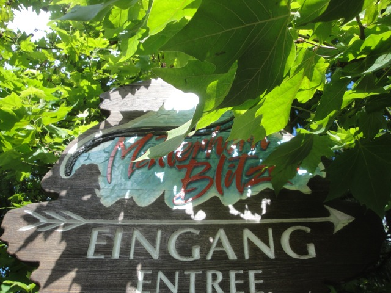

| |
Matterhorn Blitz Review
We're here at Europa Park where we'll be reveiwing Matterhorn Blitz, the parks Wild Mouse. Now while this is a pretty ordinary ride, Europa Park has some special tricks up its sleeve. First off, it was the first Big Drop Wild Mouse ever built. So it has that going for it. And as for the rest of it, well, let's ride and see. After getting in the seats and pulling down the lap bar, you go through some straight track and stop. We see the doors close in front of us, blocking our view of Europa Park and...we begin to rise. Yeah, this ride has an elevator lift. And it tilts too. I like that. More tilting elevator lifts please. Anyways, we reach the top of the lift hill. Turn to the left, and then we see it. The big drop. Yep, this is one of the Wild Mouse models that has the big drop at the beginning. And may I remind you that this was the first one ever built. WEE!!!!!! And then we rise back up to the top. Yeah, that was fun. I wish other Wild Mice had this big first drop. We then hit a set of brakes, and now the Wild Mouse part is about to begin. And yeah. Its kind of slow during these turns. I mean, don't get me wrong, there are still laterals here, they're just not quite as strong as on the other Wild Mouse Coasters. The turns start to get faster and by the last set of turns, we're about on par with the other Wild Mice. After this, we then go through a big sweeping turn and then go through a small dip. Its not too amazing, but it is a fun little dip that makes us squeal with joy. We then hit some brakes, go around another turn and go through another dip. Yeah, you can sort of see a pattern within this type of ride. We then head into some brakes, these slow us down as we meander through a few more turns until we finally head straight into the final brake run. While far from the best coaster at Europa Park, I will admit that its a very fun ride and one of the better Wild Mouse coasters simply for the elevator lift and the theme of this ride. And don't worry about capacity. It's Europa Park. You'll be fine. They run this ride phenomenally well.
7/10
Location: Europa Park
Opened: 1999
Built by: Mack
Last Ridden: June 25, 2012
Matterhorn Blitz Photos


Home
|